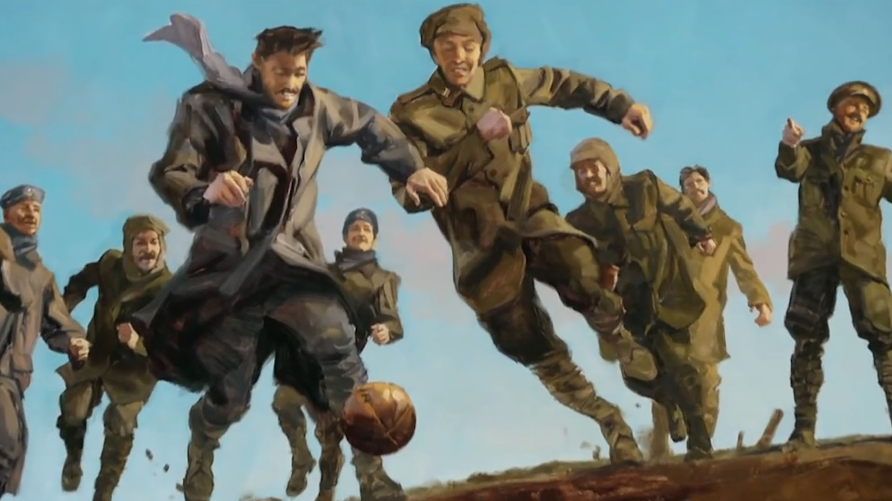
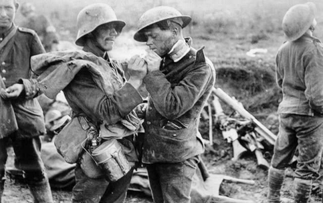
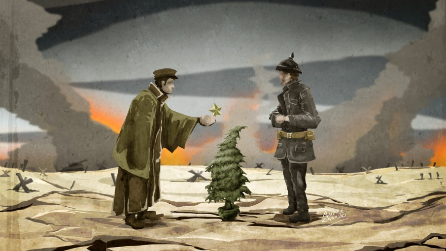
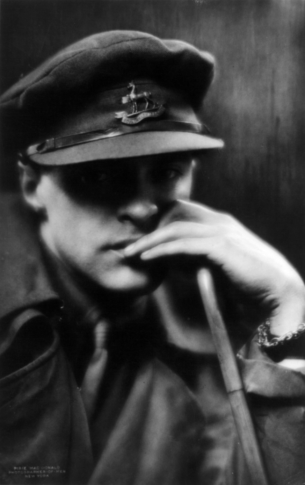
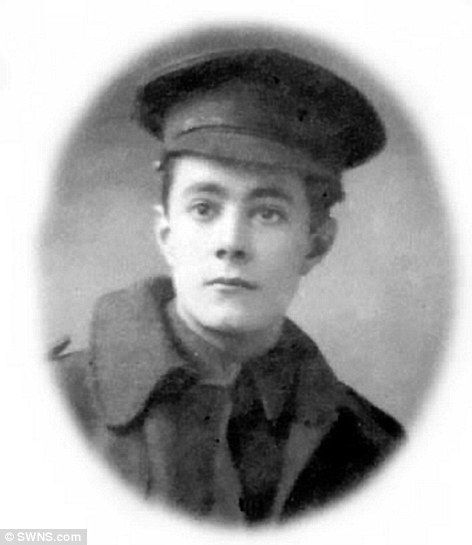
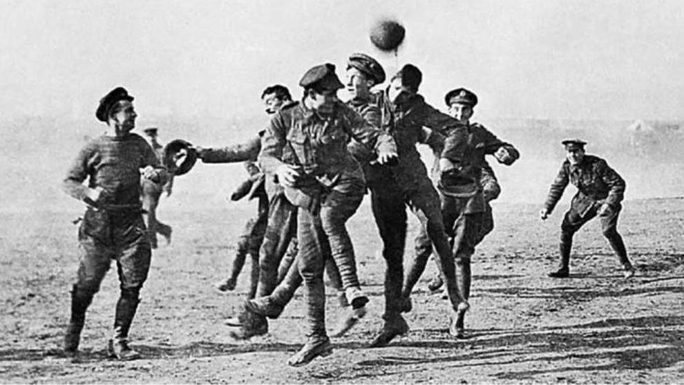

La Tregua de Navidad (en alemán, Weihnachtsfrieden; en francés, Trêve de Noël) fue una serie de ceses al fuego no oficiales que se extendieron a lo largo del Frente Occidental en la Primera Guerra Mundial alrededor de la Navidad de 1914.

La tregua se produjo cinco meses después de que comenzara la guerra. Las hostilidades se habían calmado mientras los líderes de ambos bandos reconsideraban sus estrategias después del estancamiento en la Carrera al Mar y el resultado indeciso de la primera batalla de Ypres. En la semana previa al 25 de diciembre, soldados franceses, alemanes y británicos cruzaron las trincheras para intercambiar saludos y charlas estacionales. En algunas áreas, hombres de ambos bandos se aventuraron en la tierra de nadie durante la Nochebuena y Navidad mezclándose e intercambiando comida y souvenirs. Hubo ceremonias funerarias conjuntas e intercambio de prisioneros, mientras que muchos encuentros terminaron en cánticos de villancicos. Se disputaron partidos de fútbol entre bandos, creando una de las más memorables imágenes de la tregua. Las hostilidades continuaron en algunos sectores, mientras que en otros las partes realizaron acuerdos solamente para recuperar cuerpos.
Al año siguiente, algunas pocas unidades concretaron un cese al fuego pero las treguas no fueron tan extendidas como en 1914; esto se debió, en parte a las órdenes fuertemente redactadas de los altos mandos de ambas partes, prohibiendo las treguas. Para 1916 los soldados ya no estaban dispuestos a una tregua. La guerra se había ido recrudeciendo después de las devastadoras pérdidas durante la batalla de Somme y Verdún como la utilización de gas venenoso.
Las treguas no eran exclusivas del periodo navideño y reflejaban un estado de ánimo de "vive y deja vivir", donde la infantería dejaba de comportarse abiertamente agresiva y a menudo participar en fraternización a pequeña escala, conversando o intercambiando cigarrillos. En algunos sectores, hubo ceses al fuego ocasionales para permitir a los soldados pasar entre líneas y recuperar a compañeros heridos o muertos, en otros, hubo un acuerdo tácito de no disparar mientras los hombres descansaban, hacían ejercicio o trabajaban a la vista del enemigo.
Las treguas navideñas fueron particularmente significativas debido a la cantidad de hombres involucrados y el nivel de su participación (incluso en sectores tranquilos, decenas de hombres congregándose abiertamente a la luz del día fue extraordinario) y a menudo se ve como un momento simbólico de paz y humanidad en medio de una de las guerras más violentas de la historia.
Antecedentes

Durante los primeros ocho meses de la Primera Guerra Mundial, el ataque alemán a través de Bélgica a Francia fue repelido en las afueras de París por las tropas francesas e inglesas en la primera batalla del Marne a principios de septiembre de 1914. Los alemanes retrocedieron al valle de Aisne. En la primera batalla de Aisne, el ataque franco-británico fue repelido y ambos bandos comenzaron a atrincherarse para economizar mano de obra y utilizar el excedente para flanquear sus oponentes por el norte. En la Carrera al Mar, ambos bandos realizaron maniobras recíprocas y después de varias semanas, en las cuales el ejército británico fue retirado de Aisne hacia el norte de Flanders, Ambos bandos quedaron sin espacio. Para noviembre, ambos bandos habían construido líneas continuas de trincheras que iban desde el Mar del Norte hasta la frontera con Suiza.
Antes de la Navidad de 1914, hubo varias iniciativas de paz. La Carta Abierta de Navidad fue un mensaje público de paz dirigido a “las mujeres de Alemania y Austria”, firmadas por un grupo de 101 mujeres sufragistas británicas. El papa Benedicto XV, el 7 de diciembre de 1914, había pedido una tregua oficial entre los gobiernos beligerantes. Pidió “que las armas callaran por lo menos una noche para que cantaran los ángeles”, que fue rechazado por ambas partes.
Navidad de 1914

Aproximadamente 100.000 soldados británicos y alemanes participaron en el cese informal de hostilidades a lo largo del frente occidental. Los alemanes colocaron velas en sus trincheras y árboles de Navidad, luego continuaron la celebración cantando villancicos. Los británicos respondieron cantando sus propios villancicos. Las dos partes continuaron gritándose saludos navideños los unos a los otros. Poco después, hubo excursiones por la tierra de nadie, donde se intercambiaron pequeños obsequios, como comida, tabaco, alcohol y regalos como botones y sombreros. La artillería de la región se quedó en silencio. La tregua también permitió una pausa para que lo soldados recientemente muertos pudieran ser devueltos a sus filas por grupos de entierro. Se llevaron a cabo entierros en conjunto. En muchos sectores, la tregua se prolongó hasta la noche de Navidad, continuando hasta el día de Año Nuevo en otros.
El día de Navidad, el general de brigada Walter Congreve, comandante de la 18.ª Brigada de Infantería, ubicada cerca de Neuve-Chapelle, escribió una carta recordando que los alemanes declararon una tregua por ese día. Uno de sus hombres levantó valientemente la cabeza por encima de la trinchera y otros de ambos lados caminaron hacia la tierra de nadie. Oficiales y hombres se dieron la mano e intercambiaron cigarros y puros, uno de sus capitanes "fumó un puro con el mejor tirador del ejército alemán", este no mayor de 18 años. Congreve admitió que se mostraba reacio a presenciar la tregua por temor a los francotiradores alemanes.
Bruce Bairnsfather:

Bruce Bairnsfather, que luchó en la guerra, escribió:
"No me hubiera perdido esa única y extraña Navidad por nada... Vi a un oficial alemán, una especie de teniente, creo, y siendo un poco coleccionista, le insinué que me había enamorado de alguno de sus botones... Saqué mi corta alambres y, con algunas tijeras hábiles , saque un par de sus botones y los puse en mi bolsillo. Luego le di dos míos a cambio... Lo último que vi fue a uno de mis ametralladores, que era un poco peluquero aficionado en la vida civil, cortándole el pelo anormalmente largo a un dócil boche, que estaba pacientemente arrodillado. En el suelo mientras la máquina automática se deslizaba por la parte posterior de su cuello."
Henry Williamson:

Henry Williamson, un soldado de diecinueve años de la Brigada de Fusileros de Londres, escribió a su madre el 26 de diciembre:
Querida Madre, te escribo desde las trincheras. Son las 11 de la mañana. A mi lado hay un fuego de coque, enfrente de mi un 'refugio' (mojado) con paja dentro. El suelo está descuidado en la zanja real, pero congelado en otros lugares. En mi boca hay una pipa presentada por la Princesa María. En la pipa hay tabaco. Por supuesto, dices. Pero espera. En la pipa hay tabaco alemán. Jaja, dices, de un preso o encontrado en una trinchera capturada. ¡Dios mío, no! De un soldado alemán. Si, un soldado alemán vivo de su propia trinchera. Ayer, los británicos y los alemanes se reunieron y se dieron la mano en el suelo entre las trincheras, intercambiaron recuerdos y se dieron la mano. Si, todo el día de Navidad, y mientras escribo. Maravilloso, ¿no?
El Capitán Sir Eduard Hulse informó cómo el primer intérprete que conoció de las líneas alemanas era de Suffolk y había dejado a su novia y una motocicleta de 3.5 hp. Hulse describió una canción que "terminó con 'Auld lang syne' a la que todos, ingleses, escoceses, irlandeses, prusianos, Württenbergers, etc., nos unimos. Fue absolutamente asombroso y si lo hubiera visto en una película cinematográfica ¡Debería haber jurado que era falso! " El capitán Rober Miles, infantería ligera de Shropshire del rey, que estaba junto a los Royal Irish Rifles, recordó en una carta editada que se publicó en el Daily Mail y en Wellington Journal & Shrewsbury News en enero de 1915, tras su muerte en acción el 30 de diciembre de 1914.
"Viernes (dia de Navidad). Estamos teniendo el día de Navidad más extraordinario que se pueda imaginar. Existe una especie de tregua desordenada y absolutamente desautorizada, pero perfectamente comprendida y observada escrupulosamente entre nosotros y nuestros amigos de enfrente. Lo curioso es que solo parece existir en esta parte de la línea de batalla. a nuestra derecha e izquierda todos podemos escucharlos disparar con tanta alegría como siempre. La cosa empezó anoche, una noche fría, con escarcha blanca, poco después del anochecer cuando los alemanes empezaron a gritarnos "Feliz Navidad, ingleses". Por supuesto, nuestros compañeros respondieron a gritos y en ese momento un gran número de ambos bandos habían abandonado sus trincheras, desarmados, y se habían reunido en la discutible y acribillada tierra de nadie. Aquí se llegó a un acuerdo, todos por su cuenta, de que no deberíamos dispararnos hasta pasada la medianoche de esta noche. Todos los hombres estaban fraternizando en el medio (naturalmente, no les permitimos acercarse demasiado a nuestra línea) e intercambiaban cigarros. No se disparó ni un solo tiro en toda la noche."
Uno de los alemanes escribió: "Están claramente aburridos con la guerra... De hecho, uno de ellos quería saber qué demonios estábamos haciendo aquí luchando contra ellos". La tregua en el sector continuó hasta el Boxing Day; comentó sobre los alemanes: "Los poderosos simplemente ignoran todas nuestras advertencias de bajar de su parapeto, por lo que las cosas están en un punto muerto. No podemos dispararle a sangre fría ... No veo cómo podemos conseguirlo para volver".
En la víspera de Navidad y el día de Navidad de 1914, la unidad de Alfred Anderson del 1°/5° Batallón de la Guardia Negra se alojó en una granja lejos de la línea de frente. En un entrevista posterior (2003), Anderson, el último veterano escocés sobreviviente conocido de la guerra, recordó vívidamente el día de Navidad y dijo:
"Recuerdo el silencio, el misterioso sonido del silencio. Solo los guardias estaban en servicio. Todos salimos de los edificios de la granja y nos quedamos escuchando. y , por supuesto, pensando en la gente de mi país. Todo lo que había oído durante dos meses en las trincheras era el silbido, el crujido y el gemido de las balas en vuelo, el fuego de ametralladoras y voces alemanas distantes. Pero hubo silencio de muerte esa mañana, a lo largo de la tierra hasta donde alcanzaba la vista. Gritamos 'Feliz Navidad', aunque nadie se sintió feliz. El silencio terminó en la tarde y la matanza comenzó de nuevo. Fue una paz breve en una guerra terrible."
Un teniente alemán, Johannes Niemann, escribió "agarré mis binoculares y mirando con cautela por encima de la trinchera vi la increíble vista de nuestros soldados intercambiando cigarrillos, whisky y chocolate con el enemigo".
El general Sir Horace Smith-Dorrien, comandante del II Cuerpo, emitió órdenes que prohibía la comunicación amistosa con las tropas alemanas enemigas. Adolf Hitler, un cabo de la 16.a Reserva de infantería de Baviera, también se opuso a la tregua.
En el frente cerca de Comines, hubo una confraternización temprana entre soldados alemanes y franceses en diciembre de 1914, durante una corta tregua y hay al menos otros dos testimonios de soldados franceses, de comportamientos similares donde compañías alemanas y francesas se oponían. Gervais Morillon escribió a sus padres: "Los Boches ondearon una bandera blanca y gritaron 'Kamarades, Kamarades, rendez-vous'. Cuando no nos movimos, vinieron hacia nosotros desarmados, conducidos por un oficial. Aunque no estamos limpios, están asquerosamente sucios. Te lo digo pero no hables de ello con nadie. No debemos mencionarlo ni a otros soldados". Gustave Berthier escribió "El día de Navidad los Boches hicieron un cartel que indicaba que querían hablar con nosotros. Dijeron que no querían disparar. ... Estaban cansados de la guerra, estaban cansados como yo, no tienen diferencias con los franceses pero sí con los ingleses ".
En el Frente Yser, donde las tropas alemanas y belgas se enfrentaron en diciembre de 1914, se concertó una tregua a petición de los soldados belgas que deseaban enviar cartas a sus familias, sobre las partes de Bélgica ocupadas por los alemanes.
Richard Schirrmann, que estaba en un regimiento alemán ocupando un puesto en Bernhardstein, una de las cordilleras de los Vosgos, escribió un relato de los acontecimientos de diciembre de 1915: "Cuando las campanas de Navidad sonaban en las aldeas de los Vosgos detrás de las líneas ... algo fantástico ocurrió. Las tropas alemanas y francesas hicieron las paces espontáneamente y cesaron las hostilidades; se visitaron a través de túneles de trincheras en desuso e intercambiaron vino, coñac y cigarrillos por Pumpernickel (pan negro de Westfalia), galletas y jamón. siguieron siendo buenos amigos incluso después de la Navidad ". Estaba separado de las tropas francesas por una estrecha tierra de nadie y describió el paisaje como "Sembrado de árboles destrozados, el suelo arrasado por los proyectiles, un desierto de tierra, raíces de árboles y uniformes andrajosos". Pronto se restauró la disciplina militar, pero Schirrmann reflexionó sobre el incidente y si "se podría proporcionar a los jóvenes reflexivos de todos los países lugares de encuentro adecuados donde pudieran conocerse". Luego fundó la Asociación Alemana de Albergues Juveniles en 1919.
Partidos de Fútbol.

Muchos relatos de la tregua involucran uno o más partidos de fútbol disputados en la tierra de nadie. Esto se mencionó en algunos de los primeros informes, con una carta escrita con una médico adjunto a la Brigada de Rifleros, publicada en The Times el 1 de enero de 1915, informado "un partido de fútbol ... jugado entre ellos y nosotros frente a la trinchera". Se han contado historias similares a lo largo de los años, a menudo nombrando unidades o el resultado. Algunos relatos incorporan elementos de ficción de Robert Graves, un poeta y escritor británico (y un oficial en el frente en ese momento) que reconstruyó el encuentro en una historia publicada en 1962; en la versión de Graves, la puntuación fue de 3 a 2 para los alemanes.
Algunos historiadores han cuestionado la veracidad de los relatos. En 1984, Malcom Brown y Shirley Seaton concluyeron que probablemente hubo intentos de jugar partidos organizados que fracasaron debido al estado del terreno, pero que los informes contemporáneos eran rumores o se refieren a partidos "de pateo" con "improvisados balones de fútbol" como una lata de ternera bully. Chris Baker, expresidente de The Western Front Association y autor de The Truce: The Day the War Stopped, también se mostró escéptico, pero dice que , aunque hay poca evidencia, en el lugar más probable en el que se podría haber tenido lugar un partido fue cerca del pueblo de Messines: "Hay dos referencias a un juego que se está jugando en el lado británico, pero nada de los alemanes. Si alguien un día encontrara una carta de un soldado alemán que estaba en el área, entonces tendríamos algo creíble". El teniente Kurt Zehmisch del 134 ° Regimiento de Infantería de Sajonia dijo que los ingleses "sacaron un balón de fútbol de sus trinchera y muy pronto se produjo el juego, que era maravilloso, pero muy extraño". En 2011, Mike Dash concluyó que "hay muchas pruebas de que el día de Navidad se jugó fútbol, principalmente por hombres de la misma nacionalidad pero en el menos tres o cuatro lugares con tropas de los ejércitos rivales".
Muchas unidades relataron en reportes contemporáneos que habían participado en juegos: Dash enumeró al 133° Regimiento Real Sajón enfrentándose a las "tropas escocesas"; los montañeses de Argyll y Sutherland contra alemanes no identificados (y se informa que los escoceses ganaron 4-1); la artillería de campo real contra "prusianos y Hannovers" cerca de Ypres y los Fusileros de Lancashire cerca de Le Touquet, con el detalle de una lata de raciones de corned beef como "pelota". Un escritor reciente ha identificado 29 informes sobre fútbol, aunque no brinda detalles sustantivos. El coronel J. E. B. Seely registró en su diario del día de Navidad que había sido "invitado a un partido de fútbol entre sajones e ingleses en día de Año Nuevo", pero esto no parece haber ocurrido.